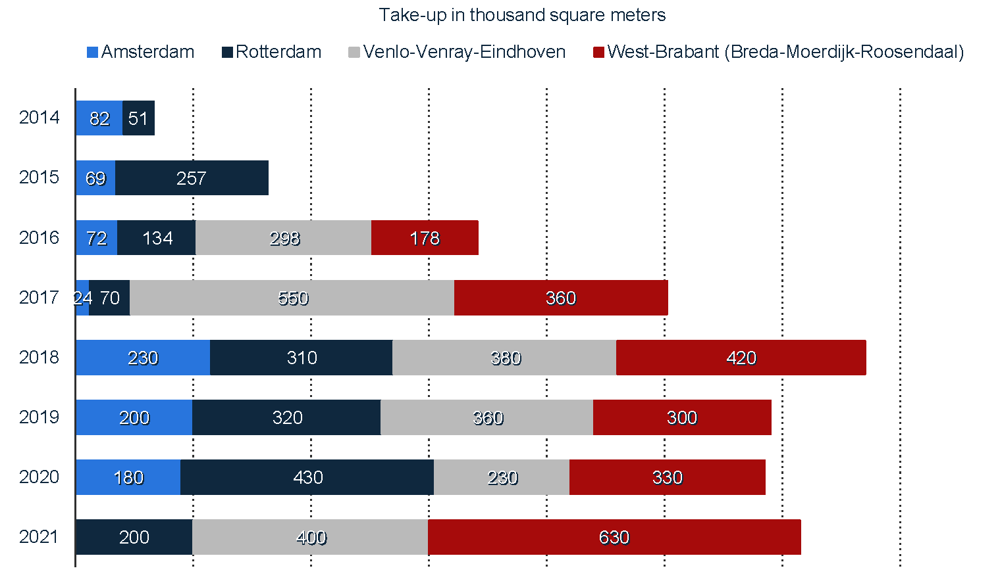

Research and Industry
In recent years, the field of warehousing has been undergoing rapid change due to advancements in technology and increasing demand for efficient and effective supply chain management.
The MSc IEM’s Warehousing course helps students stay up-to-date with the latest developments and prepare them to take on leadership roles in their future careers.
Graduates are equipped with a thorough understanding of the latest research and best practices in the field and the knowledge and skills needed to analyze data, optimize warehouse operations, and make informed decisions.
They may work as logistics managers, supply chain analysts, operations managers, or warehouse managers, among other roles.
Warehouse research
Ongoing research in warehousing is focused on developing new and innovative solutions for optimizing warehouse operations, including the use of automation and artificial intelligence, the implementation of more sophisticated inventory management systems, and the adoption of sustainable practices.
In conclusion, an MSc course in warehousing provides students with a strong foundation in the field and prepares them for careers in an industry that is constantly evolving and offers many opportunities for growth and advancement. The course also helps students stay informed about the latest research and developments in the field, equipping them to make informed decisions and contribute to ongoing efforts to improve the efficiency and effectiveness of warehousing operations.
Warehousing industry
Graduates of the MSc course in warehousing are well-prepared to meet this demand. They are equipped with a thorough understanding of the latest research and best practices in the field and the knowledge and skills needed to analyze data, optimize warehouse operations, and make informed decisions.
They are also well-positioned to contribute to the ongoing efforts to improve the efficiency and effectiveness of the warehousing industry in the Netherlands. In conclusion, the MSc course in warehousing and its learning outcomes are directly relevant to the warehousing industry in the Netherlands, providing students with the knowledge and skills needed to succeed in a critical and rapidly evolving sector of the country’s economy.
Warehousing in the Netherlands
The Netherlands is a major logistics and supply chain management hub with a well-developed warehousing industry that plays a critical role in the country’s economy. The number of warehouses in the country has been consistently growing (see Figure 1), to keep up with the latest trends towards online shopping, digitalization, and same- or next-day delivery. Many companies in the Netherlands operate large warehousing facilities to support their supply chain operations, including major retailers, manufacturers, and logistics.
Consequently, the demand for skilled professionals in the field of warehousing is high, and many companies are seeking individuals with advanced knowledge and skills in warehouse design, operation, and management.
Given the diversity of the Dutch market, M-IEM students willing to carry out their graduation projects in warehousing related-subjects may choose from a wealth of companies.


M-IME theses on warehousing
- Beeldman, S. (2022). Improving the internal warehouse logistics at Gam Bakker.
- Berghuis, O. (2022). Improving the outbound performance of a newly built semi-automated production and spare parts warehouse : A simulation study.
- Kuipers, S.M. (2022). Warehouse design for PoolPlaza.
- Bergman, M.M.G. (2021). Optimizing the transportation and external warehousing process of Euroma.
- Rensen, J.J. (2021). How to align storage and order picking in the VMI warehouse.
- Hulshof, S.R. (2019). Creating a more efficient flow of goods within the warehouse, through the improvement of storage and order picking.
- Jansen, W. (2019). Efficient Routing and Planning within the Complex Logistical Network : Based on the Integration of a New Warehouse, AGV Transports and Increased Transportation Rates.
- Nijenkamp, B. (2018). Designing the inbound warehouse process.
- Looman, J.H.A. (2017). Mobile applications on the work floor : The use of mobile applications in fast moving consumer goods warehouses.
- Pieterse, R.G.M.G. (2017). The use of a marshalling area in the warehouses of Albert Heijn.
- Schutte, M. (2017). Inventory)control of spare parts at the warehouse of the TD of Bolletje Almelo.
- Vreriks, S.F. (2017). New Integrated Warehouse Design Framework And its application at ATAG Benelux BV on the redesign of the distribution warehouse.
- Wentzel, S.J. (2017). Improving warehouse layout design : A study to optimize the warehouse of the hospital of Aruba.
- Bijl, T. (2016). Warehouse cost estimation.
- Brummelhuis, Bob (2016). Coping with Variability: Improving the Inbound Process of the VMI Holland Warehouse.
- Land, G. (2015). Forecasting the sales for Body & Fit : Automatic sales forecasting to determine the safety stocks and reorder points in an e-commerce warehouse.
- Lugtig, J. (2015). Improving warehousing control at Royal Vezet B.V. : A simulation study on dynamic warehouse processes.
- Padmoes, T. (2014). Improving storage cost allocation & warehouse space utilization at a third party warehouse.
- Puspasari, K. (2014). An Approach to Capacity Planning of Distribution Warehouses for X-Firm.
- Reiche, P.J.J. (2014). The combination of ‘Bricks&Clicks’: An investigation into warehousing efficiency improvements for the E-Commerce fulfillment processes at Makro Cash & Carry.
- Mulder, S. (2013). Sustainable warehousing; An empirical research at Unilever on building options and collaboration models in sustainable warehousing.
- van Eijndhoven, F. (2012). Inventory management of the technical warehouse.
- Martens, J. K. J. (2005). Smartphone software markets: The battle in case studies.
- Stouwdam, G. (2010). Warehouse efficiency at Topa verpakking.
- Veldman, F.H.J. (2009). Warehouse design for a wholesale company in the packaging industry.
- Ruijter, H. de (2007). Improved storage in a book warehouse : Design of an efficient tool for slotting the manual picking area at Wolters-Noordhoff.
Footnotes
Total floor space known to have been let or pre-let (planning/construction stage), sold or pre-sold to tenants or owner-occupiers↩︎